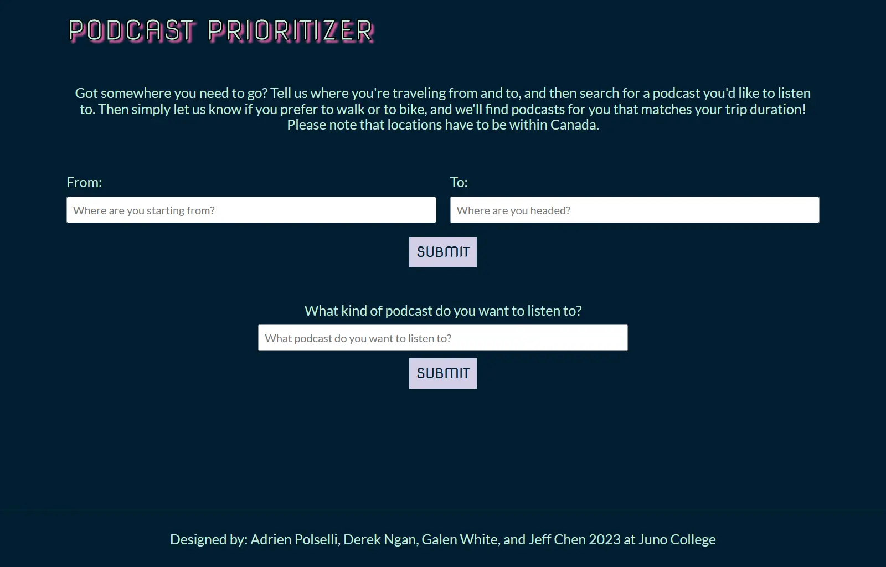
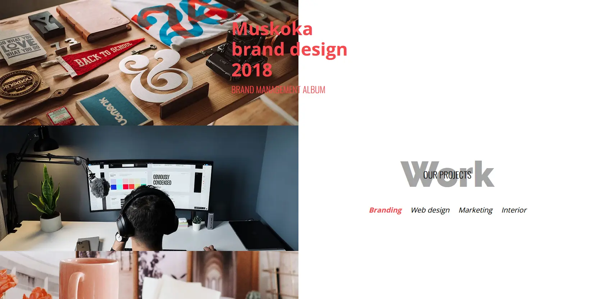
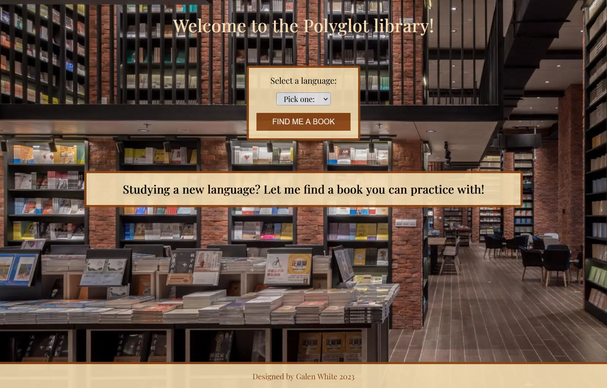

Galen White
About me
Howdy! I'm a Front-End developer from Brampton, Ontario, and a graduate of Juno College of Technology. I use my front-end tech stack of HTML, CSS, Javascript and more to create beautiful, functional websites that emphasize responsiveness and accessibility.
Beyond coding, I fancy myself a jack-of-all-trades, expanding my skillset with stuff like Brazilian Jiu Jitsu, guitar, acting, and picking up new languages (Я говорю мало по-Русски!). But ultimately, I love the simple things in life: video games, tabletop gaming, snuggles with my cat, and watching my Chicago Bears disappoint me every year.
My skillset
- Javascript
- Typescript
- React
- Restful API
- Firebase
- HTML
- CSS
- SCSS
- Wordpress
- Wix
- Git
- Github
Projects
Click/press a project title to learn more!
- 
-
Need something to listen to while you’re walking or biking? Input your starting location and destination, and which method of transportation you prefer, and this app will recommend you a podcast to listen to during your trip. A collaborative project with 3 other developers.
- React
- CSS/SCSS
- API
- 
-
A fully responsive and accessible PSD complete with Javascript features such as hover displays, slideshows, modal, and navigation buttons.
- HTML
- CSS
- Sass
- Javascript
-

-
Users are able to create lists of movies and join groups together, where they can view one another’s lists and vote on which movie they’d like to watch. Inspired by and tailor-made for a tradition with my own friends.
- React
- Typescript
- 
-
Studying a language and want to get some reading practice in? This app can help. Simply select a target language and you’ll be recommended a book to read which will have a translation in that language.
- React
- Restful API
- CSS